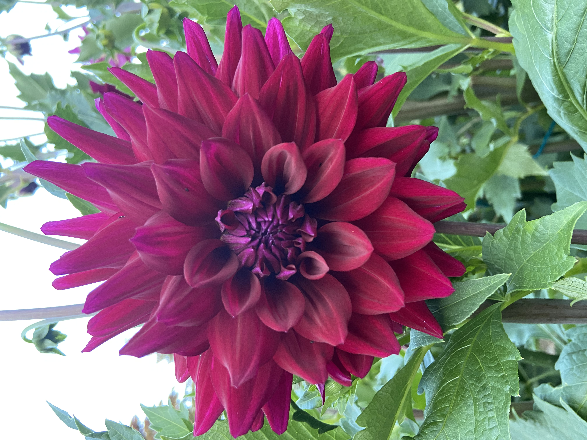
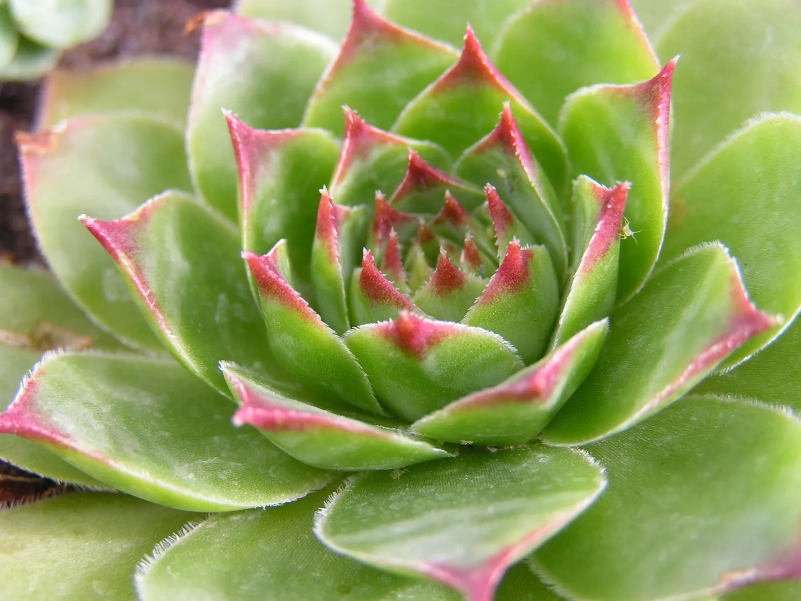
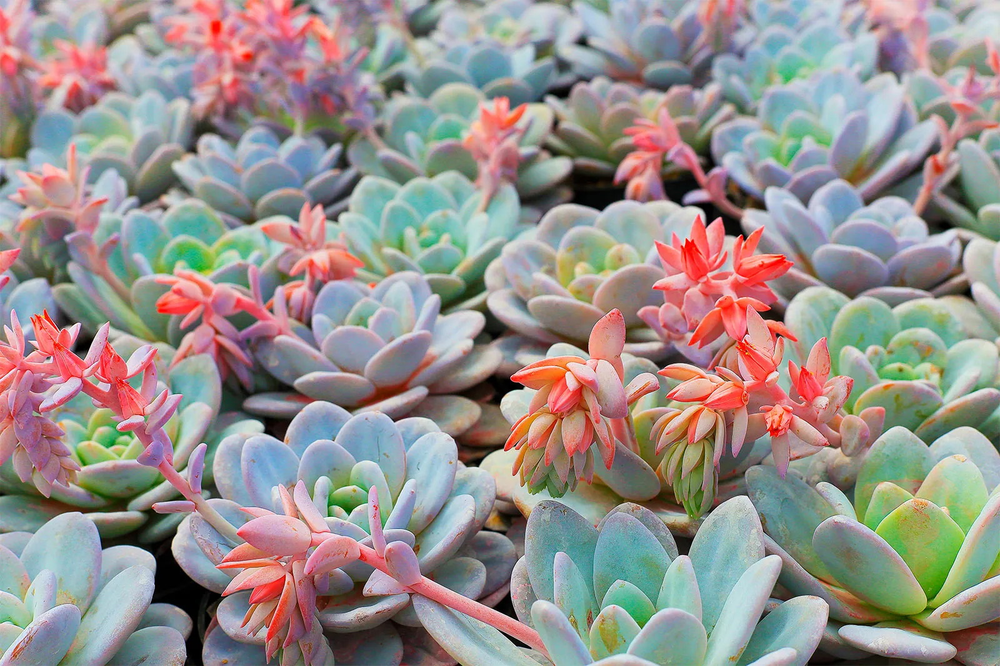

Image of one of master gardener and dahlias expert dahlias Larry Cole.
September 2020.
Dahlias are native to Mexico and South America and hold their
display in reserve for mid-to-late summer and early fall. The genus offers
an incredible diversity of color and form and we offer dozens of varieties every year.
Dahlias are perennial but not cold hardy – tubers can overwinter in the ground in
Zone 8 or warmer; in colder climates tubers can be dug after frost and easily stored
indoors over winter..
Me and a cactus.
Cactus Fun Facts:
Cacti life circle lasts from 15 to 300 years, depending on the species.
You can safely drink water from the cactus. However, it has a higher density than regular, tap water.
Bees, butterflies, moths, bats, and hummingbirds are the main pollinators of the cacti.
Instead of leaves, cacti have spines. They can be soft or rigid, curved or straight, scattered or somewhat arranged. Spines can grow up to 6 inches (15 cm) long.

House Leek
House Leek Fun Fact:
Native to Europe, Morocco, and western Asia. The name houseleek refers to the growth of some species on thatched roofs in Europe; live-forever indicates their hardiness and durability.

Echeveria varient of succulent.
Succulent Fun Fact:
Succulents and cacti are not the same thing. The words are often used interchangeably, but cacti are actually a type of succulent.